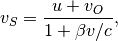
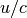
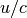
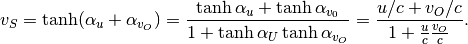

Special Relativity¶
A Coincidence?
Let’s start from this coincidence.

Addition of velocities
Recall that in special relativity, velocity addition is

where  is the velocity measured in moving frame S, is the velocity measured in frame O. This
is the velocity measured in moving frame S, is the velocity measured in frame O. This  is the factor  where u is the velocity of the moving frame measure in frame O.
is the factor  where u is the velocity of the moving frame measure in frame O.
At the same time, we have the following hyper trig relation.

Isn’t this addition of angles the same as the velocity addition?
The algebra of relativity is mostly based on invariance of a new distance under a new rotation. Here we are not going to repeat the derivation of these transformations from the beginning, instead we would like to have a look at the really amazing part of the theory.
As we define

and any velocity divided by speed of light to be a hyperbolic tangent,

the velocity transformation, as stated in the admonition block, is an addition of angles

However, addition of velocity is not that fundamental. We need to look into the relation

Since we are talking about geometry, space-time diagram will be extremely important.
Refs & Notes¶
- The Geometry of Special Relativity by Tevian Dray.